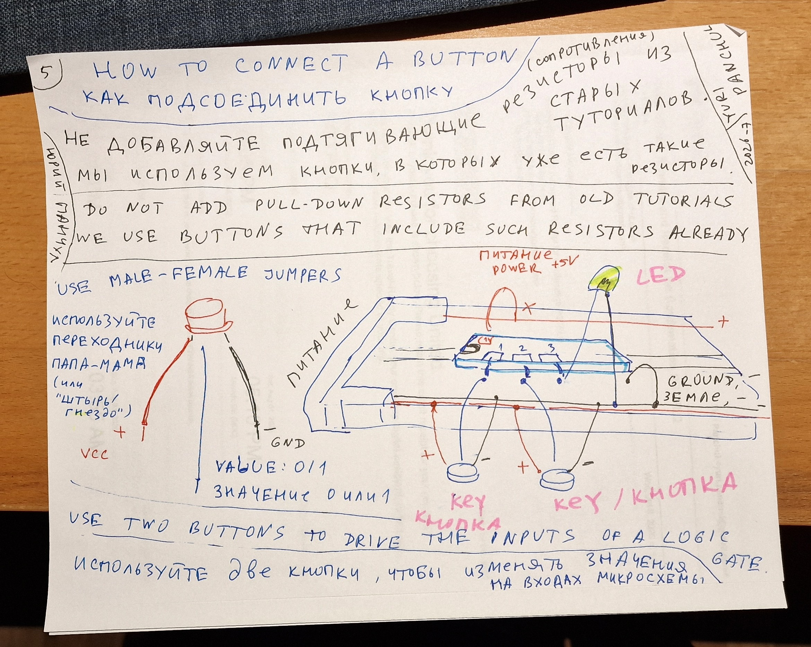

Start here / English / 45–60 minutes
Your first logic circuit.
Connect power, a pair of buttons and an XOR chip. See how the inputs determine the light. Then use an assembled clock generator to watch a D flip-flop remember one bit.
Based on Yuri Panchul’s four illustrated starting sheets and the LSSK parts list. Русская версия →
1. Prepare the parts
| Part | Quantity | LSSK row |
|---|---|---|
| Full-size breadboard | 1 | 45 |
| Breadboard power module, set to 5 V | 1 | 56 |
| USB-to-DC boost cable marked 9 V | 1 | 57 |
| CD4070BE, quad XOR, DIP-14 | 1 | 2 |
| Button module with built-in pull resistor | 2 individual modules | 66 |
| 5 V current-limited LED, or 5 V eight-LED module | 1 single LED or 1 module | 46 or 62 |
| M–M and M–F jumper leads | Have a 40-lead pack of each available; working estimate: 18 M–M and up to 15 M–F | 70, 71 |
| IC extractor | 1 | 53 |
Use the kit’s special 5 V LEDs and resistor-equipped button modules. Their built-in components let you connect the circuit directly. The classroom supplies a USB power source; a teacher can check the rail voltage with a meter.
2. Understand the breadboard and connect power

- Disconnect power while assembling. In the center area, each group of five holes is connected. The center trench separates the two sides. The long side rails distribute power; some are split halfway and need jumper bridges.
- Fit the power module with its + and GND pins aligned with the matching rails. Set the output selectors to 5 V.
- Connect USB source → cable marked 9 V → barrel input of the power module → 5 V rails. The 9 V is the module’s input, not the voltage applied to the logic chips.
- Check the rail polarity and approximately 5 V output before inserting a chip. Turn power off again before wiring.
3. Try the special 5 V LED

Connect the long lead (anode) to +5 V and the short lead (cathode) to GND. Switch on: the LED should light. Switch off before moving it. If using the eight-LED module, connect its common cathode to GND and try one channel at +5 V. This experiment uses the source’s current-limited 5 V parts.
4. Insert the XOR chip

Place CD4070 across the center trench, one row of pins on each side. Viewed from above with the notch at the top, pin 1 is top left. Count down the left side to 7 and up the right side from 8 to 14.
| CD4070 pin | Connection |
|---|---|
| 14 — VDD | +5 V |
| 7 — VSS | GND |
| 1 — A | OUT of button A |
| 2 — B | OUT of button B |
| 3 — output | Directly to the LED anode or one LED-module channel |
| LED cathode / module common cathode | GND |
| Unused inputs 5, 6, 8, 9, 12, 13 | GND |
| Unused outputs 4, 10, 11 | Leave disconnected |
5. Connect the buttons

Connect VCC on each button module to +5 V, GND to GND, and OUT to the chosen gate input. Follow the labels on the supplied module rather than assuming the order of its pins. With the specified active-high modules, released means 0 and pressed means 1.
6. Check every input combination
Predict the result, press the buttons, and record what happens. XOR lights the LED when exactly one input is 1.
| A | B | XOR · 4070 | AND · 4081 | OR · 4071 |
|---|---|---|---|---|
| 0 | 0 | 0 | 0 | 0 |
| 0 | 1 | 1 | 0 | 1 |
| 1 | 0 | 1 | 0 | 1 |
| 1 | 1 | 0 | 1 | 1 |
Turn power off and use the extractor to remove the chip evenly. Try CD4081 and CD4071 with the same first-gate connections. For CD4069, use input pin 1 and output pin 2; power remains on 14/7. Tie unused inputs 3, 5, 9, 11, 13 to GND. Its output should be the opposite of its input.
Checkpoint: explain all four XOR results and point out the chip’s two inputs, output, power and ground.
7. Add a clock and one bit of memory
For the next experiment use CD4013, the already assembled 555 clock module from LSSK row 54, two button modules (DATA and RESET), and the same LEDs. Set the generator to approximately 0.5–1 Hz. Connect its output directly to the clock input.
| Connection | Destination |
|---|---|
| CD4013 pins 14 / 7 | +5 V / GND |
| 555 module VCC / GND | The same +5 V / GND |
| 555 module OUT | CD4013 pin 3 — clock |
| DATA button OUT | CD4013 pin 5 — D |
| RESET button OUT | CD4013 pin 4 — active-high RESET |
| CD4013 pin 6 — SET | GND |
| CD4013 pin 1 — Q | Directly to a 5 V LED or LED-module channel |
| Unused second flip-flop | Inputs 8, 9, 10, 11 → GND; outputs 12, 13 left disconnected |
- Press RESET and release it. Q becomes 0.
- Set DATA before a rising clock edge. At that edge, Q takes the value of DATA.
- Change DATA between edges: Q holds its previous value until the next rising edge.
- Press RESET between clock edges: Q clears immediately.
Pin references: CD4070B and CD4013B.
If the result is unexpected
- Check that the rails have power and that any rail breaks are bridged.
- Check chip orientation, pin numbers, LED polarity and button labels.
- For the flip-flop, check common ground, SET at 0 and RESET released.
- Power off before correcting a connection.
Continue the course
Build a counter, shift register and adder. The later seven-segment lesson uses the source’s explicit exception: a 4511, a common-cathode display and seven 560 Ω resistors, one per segment. Then try the arbiter, FSM, single FIFO and automatic three-FIFO adder.